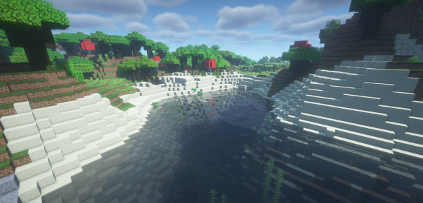

tady jsou naše pravidla

Upozornění: Níže napsaná pravidla je třeba dodržovat. Porušení některého z pravidel je trestáno trestem, který považujeme za přijatelný pro Vás i pro server. S případnými nejasnostmi, nepřesnostmi nebo dotazy se obracejte na člena A-Teamu. Pravidla se také mohou kdykoliv změnit. Poslední změna byla provedena 11. 6. 2023
- ZÁKLADNÍ USTANOVENÍ
- Všichni hráči jsou zavázáni dodržováním těchto pravidel
- Zakazuje se jakákoliv forma obcházení trestu, který byl udělen za porušení těchto pravidel
- Všichni jsou povinni dodržovat platné zákony České republiky a Slovenské republiky a základy slušného chování ve společnosti
- HODNOSTI
- Hráč
- Hráč je každý člověk, který se připojil na server
- Má svá práva a povinnosti dle tohoto ustanovení
- VIP
- Rozděluje se na skupiny
- VIP
- VIP+
- Ponožka
- Člověk s VIP je hráč, tudíž nemá imunitu před bany/muty
- Hráč VIP hodnost získá
- zakoupením za předem domluvenou částku
- jako odměnu v soutěži
- jako dar od serveru
- Má možnost přistupovat k vyhrazeným funkcím serveru pro specifickou VIP skupinu
- Helper
- Rozděluje se na funkce
- Zkušební (zkr. Zk.)
- Obecný (bez zkratky)
- Hlavní (zkr. Hl.)
- Helper je hráč, který získal funkci na základě řádného přijímacího řízení
- Helper je členem A-Teamu
- Zkušební Helper je hodnost, která je udělována helperům, kteří se ve své funkci teprve zaučují
- Délku zkušebního období určuje člen Vedení serveru
- Funkce Hlavního Helpera může být zastávána pouze jedním hráčem na serveru
- Hlavní Helper je pověřen organizací Helper teamu
- Je povinen
- pomáhat hráčům s funkcemi serveru, řešením problémů a řešením sporů. Podrobněji Dodatek 2 – Pomáhání hráčům členy A-Teamu
- jednat vstřícně, slušně a s rozvahou
- rozhodovat se objektivně a spravedlivě
- provádět namátkové kontroly hráčů s úmyslem kontroly dodržování pravidel. Při provádění kontroly Helper nesmí omezit nebo narušit herní režim a ohrozit pohodlí hráčů
- nahlášení od hráče předat příslušné instanci
- Admin
- Rozděluje se na funkce
- Zkušební (zkr. Zk.)
- Obecný (bez zkratky)
- Hlavní (zkr. Hl.)
- Admin je hráč, který získal funkci na základě řádného přijímacího řízení.
- Admin je členem A-Teamu a Vedení serveru
- Zkušební Admin je hodnost, která je udělována adminům, kteří se ve své funkci teprve zaučují
- Délku zkušebního období určuje Majitel či Hl.Admin
- Funkce Hlavního Admina může být zastávána pouze jedním hráčem na serveru
- Hlavní Admin je pověřen organizací Admin i Helper teamu
- Je povinen
- všechny povinnosti co jsou napsány u Helpera
- Majitel
- Majitel je hráč, který server založil a má na starosti absolutní správu serveru
- Majitel je člen A-Teamu a Vedení serveru
- Je povinen
- všechny povinnosti co jsou napsány u Admina
- OBECNÁ USTANOVENÍ
- Pravidla pro hraní na serveru
- Hráč má právo
- požádat o pomoc člena A-Teamu, která se vztahuje k serveru Ponožka
- Hráč je povinen
- nahlásit nalezenou chybu nebo bug členu A-Teamu. Tuto chybu nebo bug nesmí hráč úmyslně využívat
- zodpovídat za svůj herní účet
- být při zdržování na serveru fyzicky přítomen u herního zařízení, kromě případu statusu AFK
- pokud je na serveru online nějaký člen z A-Teamu/ Vedení, tak všechny otázky směřujte na ně, ne na Majitele
- Hráči je zakázáno
- použití externích programů a modifikací (tzv. cheatů), které poskytují uživateli určitou výhodu při hraní
- se vydávat jakýmkoli způsobem za jinou osobu než té vlastní
- provádět takové skutky, které by mohly někoho dehonestovat, diskreditovat, pohoršit nebo pobouřit nebo se budou slučovat s parametry nevhodného vyjadřování viz. Dodatek 1 – Nevhodné vyjadřování
- provádět takové skutky, které by mohly vést k přechodu hráčů ke konkurenci jinou než přirozenou cestou
- provádět vědomě takové skutky, které nadměrným způsobem vytěžují server
- provádět takové skutky, které znemožňují, omezují nebo celkově znesnadňují výkon povinností hráčů a personálu serveru
- Pravidla pro textovou a hlasovou komunikaci
- Hráč je povinen
- vyjadřovat se tak, aby nikdo nebyl dehonestován, diskreditován, pohoršen, pobouřen nebo nebylo použito nevhodné vyjadřování viz. Dodatek 1 – Nevhodné vyjadřování
- používat komunikaci zejména pro předávání informací a konverzaci
- DODATEK 1 - NEVHODNÉ VYJADŘOVÁNÍ
- Nevhodné vyjadřování je komunikace mezi živými nebo neživými objekty, která není ve slušné společnosti vhodná.
- Za nevhodné vyjadřování se může považovat:
- použití vulgárních nebo jinak závadných slov, symbolik a znaků v komunikačních prostředcích [= herní/neherní mechanika, skrz kterou lze vést textovou/hlasovou/dorozumívací komunikaci (např. herní chat, cedulky, postavený text/symboly, knihy, soukromé zprávy, názvy/popisky nástrojů, název residence, uživatelské jméno, skin postavy atd.)]
- použití nadměrného množství majuskulí, zejména v případech, kde se dle pravidel nepíšou
- nadměrné použití 1komunikačního prostředku v malém časovém intervalu včetně zpráv, které jsou vyvolány po akci hráče (např. připojení, odpojení atd.)
- propagace serveru, konkurenční služby nebo zboží (mimo rámec serveru)
- DODATEK 2 - POMÁHÁNÍ HRÁČŮM ČLENY A-TEAMU
- Člen A-Teamu je povinen hráči pomoct:
- s orientací na serveru
- se serverovými funkcemi (např. aukce, obchod, příkazy, residence atd.)
- vysvětlením herních mechanik
- s řešením sporů